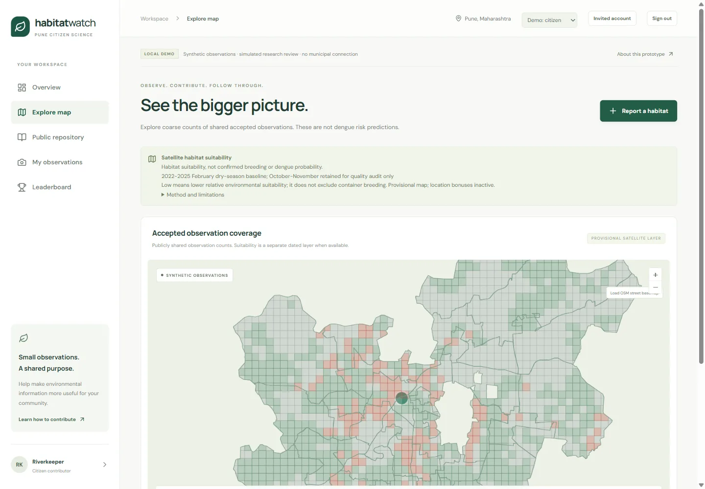
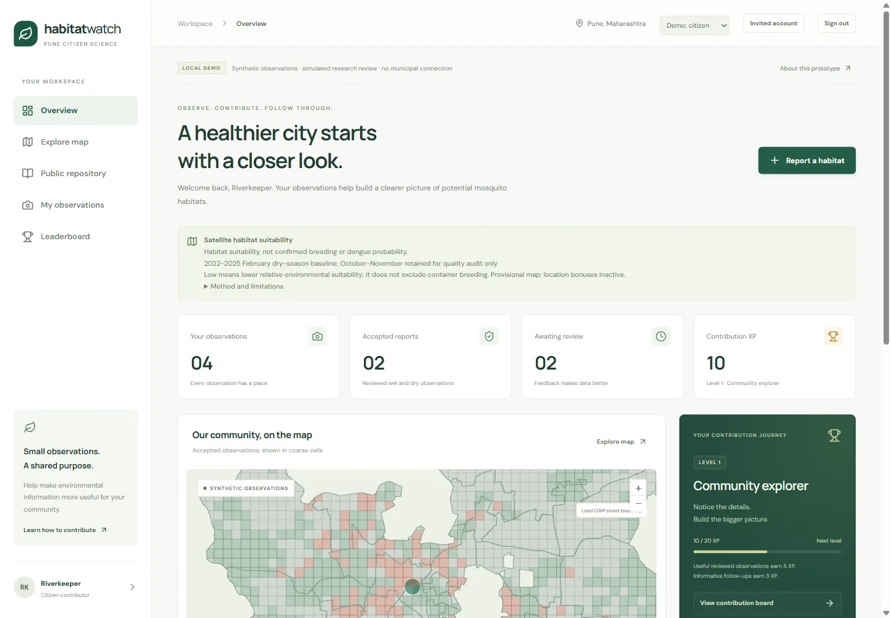

Case study / 04Pune, India · 2026
Citizen science · Web GIS prototype · Semester 3
Pune
Habitat Watch.
A citizen-science platform where residents report potential mosquito-breeding habitats, researchers review the evidence, and a satellite-derived suitability layer adds context. Built end to end as a local, synthetic-data prototype.
See the results
01 / Situation
Data people
can trust, and give.
Dengue habitat data is scarce at neighbourhood scale. This prototype designs the whole loop a pilot would need: report, research review, feedback, and a reward for useful, follow-up observations, with privacy and consent built into the data model.
feedback → XP
GeoServer · React
synthetic data
02 / Approach
A pilot,
designed in full.
- 01
Design the data loop
Citizens submit a photo and a location; reviewers record an outcome and feedback as append-only events. Rewards (5 / 3 / 2 XP, 20 XP weekly cap) are ledgered, reversible and exclude duplicate images.
- 02
Protect participants
Versioned consent events, coarse ~1 km public locations, metadata-stripped images with random filenames, consent withdrawal, invited accounts, and login throttling. GeoServer reads four privacy-safe SQL views through a read-only database role.
- 03
Add the geography
A February 2022–2025 Landsat suitability layer (NDWI, NDMI, NDVI, LST) in ~500 m cells, plus an exploratory AHP hazard × exposure model at 30 m from CHIRPS, ESA WorldCover, WorldPop and OSM water, published over WMS/WMTS/WFS/WCS.
- 04
Test it end to end
Backend tests run on PostGIS in the container, the GIS maths has its own pytest suite, and a Playwright script exercises the OpenLayers client: identify, ward dashboard, time slider, measure and swipe.
03 / Results
Built and
tested.
46
backend tests passing: workflow, spatial queries, consent, CSRF, login limits, demo/pilot isolation
17
GIS tests passing: AHP weights, Landsat indices and masking, risk maths
16 / 16
browser end-to-end checks, with no console errors or failed requests
0.018
AHP consistency ratio for the hazard × exposure weights (below the 0.10 threshold)
Built is not validated. The suitability and risk layers are exploratory. No entomological or case data exists in this project, and the dengue case counts shown are synthetic, so they cannot validate anything.

04 / Data & method
Real pixels,
synthetic people.
The satellite layer uses real Landsat pixels. Everything about participants and dengue cases in the demo is synthetic and labelled that way in every layer, chart and table.
- Backend
- Django 6 · GeoDjango · PostGIS 17
- OGC services
- GeoServer 2.28 (WMS, WMTS, WFS, WCS)
- Client
- React · Vite · OpenLayers
- Rasters
- Landsat · CHIRPS · WorldCover · WorldPop
- Ops
- Docker Compose · nginx · Playwright
05 / Limits & honesty
What it does
not claim.
The project’s own status file is explicit, and so is this page:
- Local synthetic demonstration only: it is not deployed, has collected no real participant data and is not ready to.
- Post-monsoon Landsat coverage was 0.2–12% and unusable, so the satellite baseline is February only, with no field validation.
- Ward boundaries come from source-derived 2025 PMC electoral geometry, not a certified official boundary.
- A real pilot would still need ethics approval, a retention policy, production hardening and an independent field evaluation.